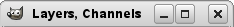
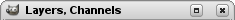

|

|
 |
| 6.16. Display |

|
6.18. Canvas Interaction |
This page lets you customize the way windows are handled in GIMP. You should note that GIMP does not manipulate windows directly, instead it sends requests to the window manager (i.e., to Windows if you are running in Windows; to Mutter if you are running in a standard GNOME setup in Linux; etc). Because there are many window managers, and not all of them are well behaved, it cannot be guaranteed that the functions described here will actually work as described. However, if you are using a modern, standards-compliant window manager, they ought to.
The preferences dialog can be accessed from the main menu, through → .
Window Manager Hints
The choices you make here determine how the Toolbox, and the docks that hold dialogs, will be treated. You have three possibilities for them:
If you choose Normal Window, they will be treated like any other windows.
If you choose Utility Window, the reduce button in the title bar is absent and the docks will remain permanently on your screen.
Figure 15.116. Utility window title bar

Normal title bar

The title bar in a utility window
If you choose Keep above, they will be kept in front of every other window at all times.
Note that changes you make here will not take effect until the next time you start GIMP.
Focus
Normally, when you focus an image window (usually indicated by a change in the color of the frame), it becomes the “active image” for GIMP, and therefore the target for any image-related actions you perform. Some people, though, prefer to set up their window managers such that any window entered by the pointer is automatically focused. If you do this, you may find that it is inconvenient for focused images to automatically become active, and may be happier if you uncheck this option.
Window Positions
If this option is checked, the next time you start GIMP, you will see the same set of dialog windows, in the same positions they occupied when you last exited.
When enabled, GIMP will try to restore windows on the same monitor they were used previously. When disabled, windows will appear on the currently used monitor.
This button is only useful if “Save window positions on exit” is unchecked. It allows you to set up your windows they way you like, click the button, and then have them come up in that arrangement each time you start GIMP.
If you decide that you are unhappy with the arrangement of windows you have saved, and would rather go back to the default arrangement than spend time moving them around, you can do so by pressing this button.